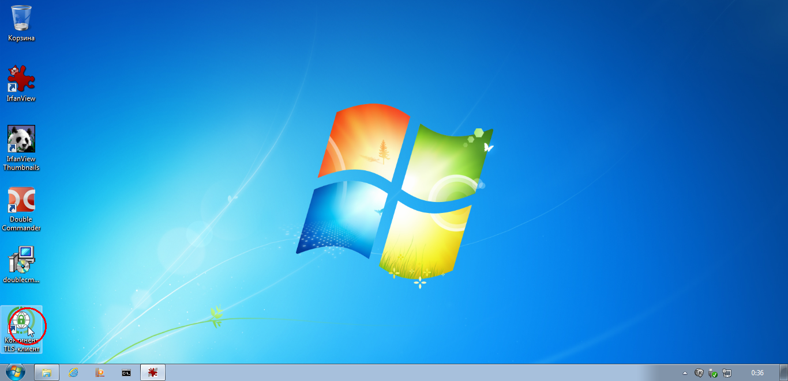
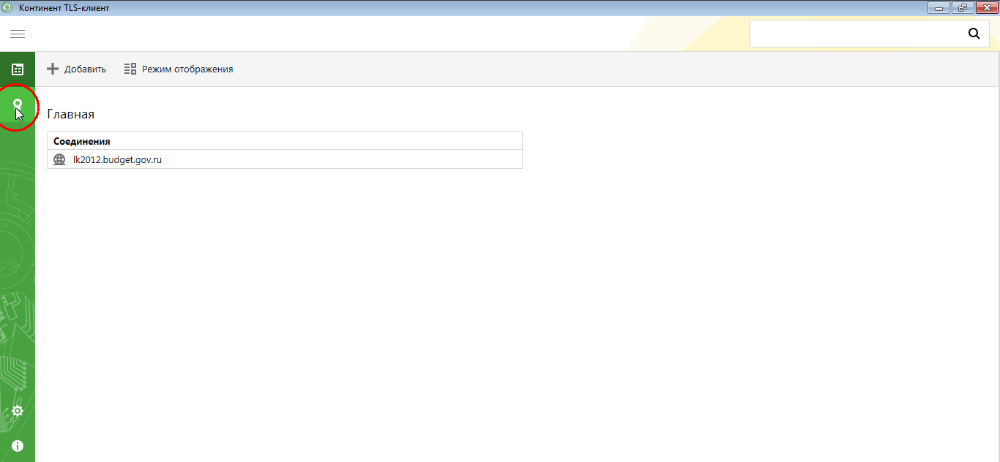
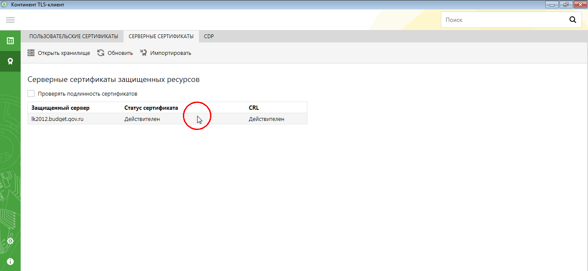
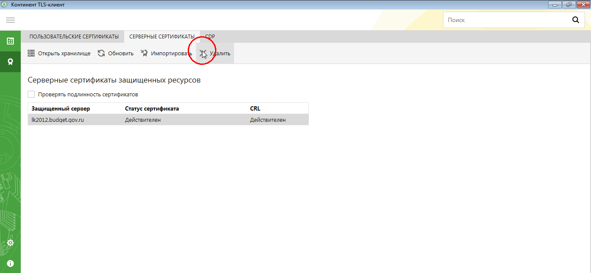
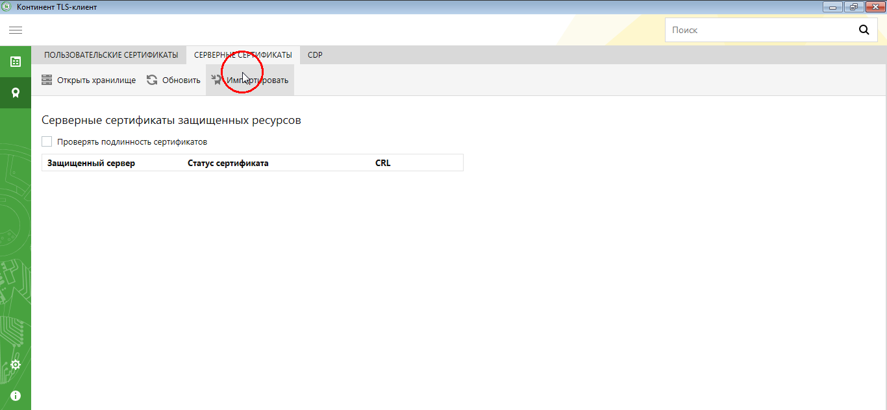
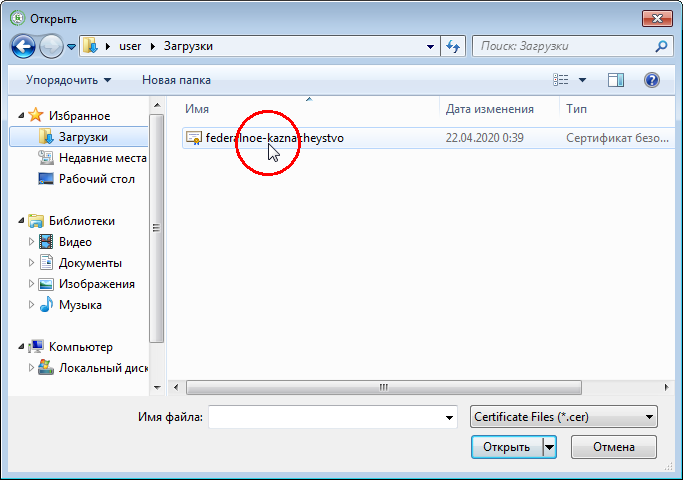
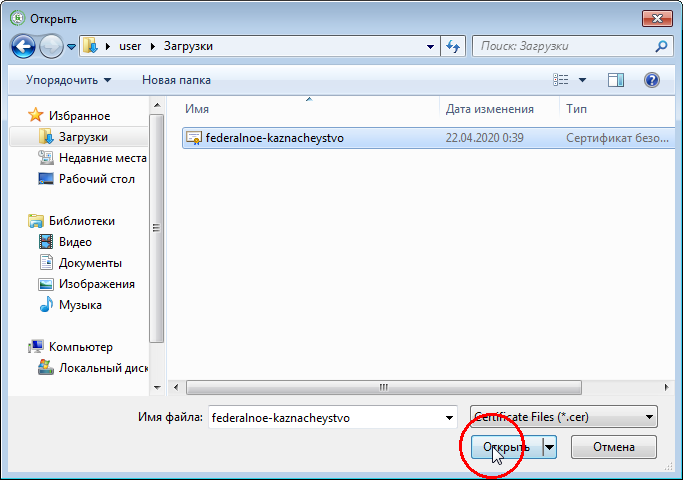
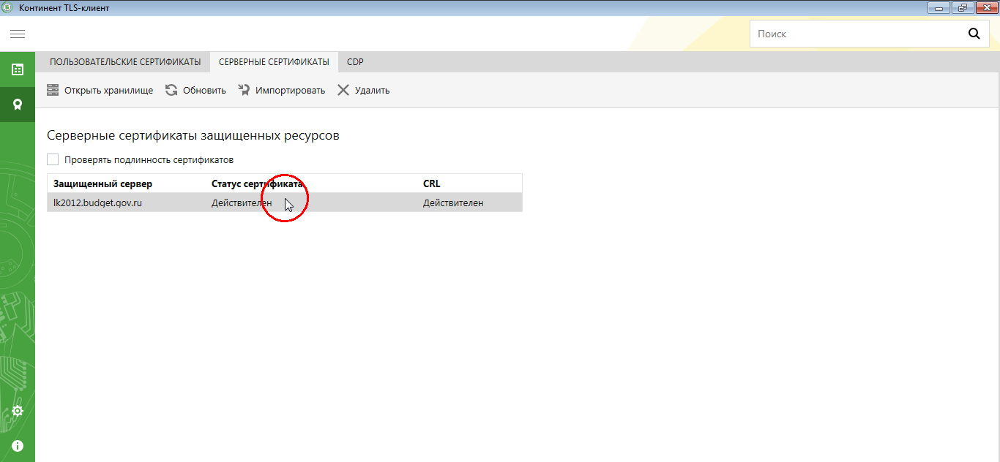

Смена серверного сертификата в Континент TLS клиент
Что может понадобится
Перед установкой сертификата желательно установить корневые сертификаты.
Установка корневого сертификата в Континент TLS клиент
Скачайте новый серверный сертификат для ГИИС "Электронный бюджет" в любую удобную папку.
Запустите Континент TLS Клиент. Найти его можно на рабочем столе, с помощью поиска в меню "Пуск" или в системном трее. 
В открывшемся окне перейдите в раздел Сертификаты (кнопка с изображением сургучной печати с лентой), далее зайдите во вкладку Серверные сертификаты

Удалите старый сертификат отметив его и нажав кнопку Удалить


Нажмите кнопку Импортировать и выберите новый сертификат



Убедитесь что все прошло успешно - в колонках Статус сертификата и CRL должно стоять Действителен 